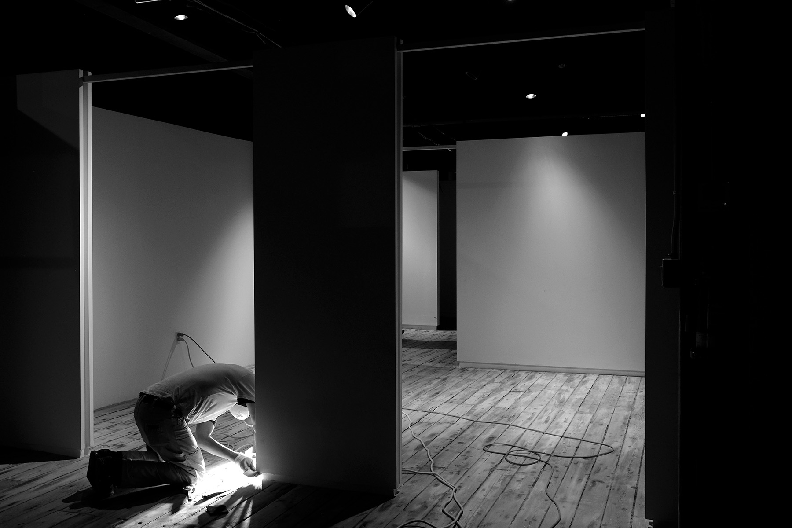
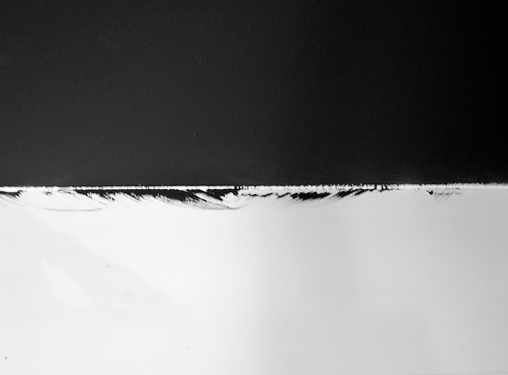
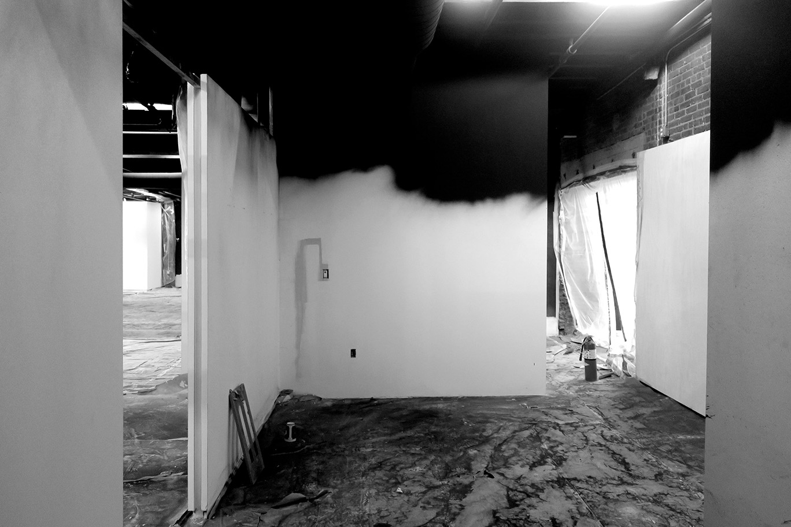
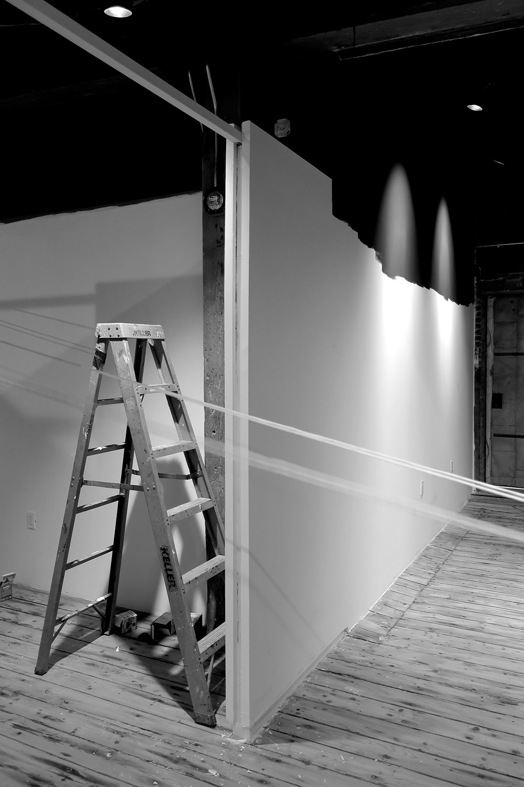

"Labor, Ecology, and Humor in the Museum"
Perspecta 57: Archival Ferment
Editors: M.C. Overholt, Alex Whee Kim, Brian Christopher Orser, and
Sarah Hye Yeon Kim
MIT Press, 2026
I was invited to contribute to this issue of Perspecta, the Yale Architectural Journal, which centered on the theme of “archival ferment.” The issue seeks to address the current paradigm of archives and history in architectural education and practice and to propose an alternative model. In the editors’ words, “the function of history [in architecture]...is reduced to a false binary: either a reliquary of an outmoded past and an obstacle for the marche en avant (advance) of modernity or a catalog of references to be deployed and consumed in postmodern pastiche. Departing from these conventions, Perspecta 57 seeks an alternative method for attending to the multitudinous past, approaching it not as a deadened legacy but as an active and living culture: an archive as ferment. ...It refers to a culinary practice that harnesses organic processes of decay and spoilage (conventionally seen as undesirable) to create nutrient-rich foods that can be stored and consumed through barren seasons.”
My contribution consists of an interview with the art historian Fernando Domίnguez Rubio, author of Still Life: Ecologies of the Modern Imagination at the Art Museum, and a foreword to our conversation titled “Creating New, Creating Same, Still.” We discuss Rubio’s concern with the labor of museum conservation in maintaining a fiction of sameness and permanence for inevitably fragile and decaying objects. I connect his thinking on the term “mimeographic” to the labor of architectural production that relates to re-producing “sameness.”


